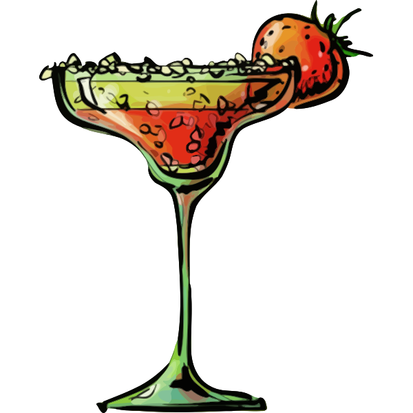

Home
Strawberry Daiquiri

Description
The Strawberry Daiquiri is a summertime favorite that evokes sunny days and poolside vacations. At its best, the drink is a refreshing, delicious concoction that highlights good rum, sweet strawberries and fresh lime juice.
Ingredients
- 37 1/2ml Bacardi Rum
- 12 1/2ml Strawberry Liqueur
- 25ml Lime Juice
- 12 1/2ml Sugar Syrup
- 1 Strawberry
Steps
- Add all ingredients into a Boston Shaker and fill with ice
- Shake for about 15 seconds and then strain into a chilled martini glass
- Garnish with a strawberry